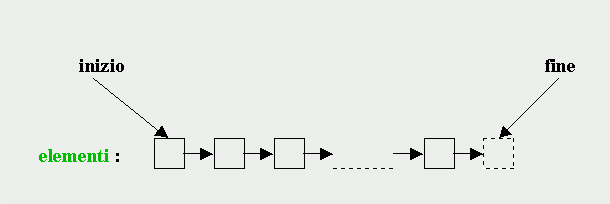

La Standard Template Library
Generalità
Una classe che memorizza una collezione di oggetti (chiamati elementi), tutti di un certo tipo (parametrizzato), e detta: "contenitore".
I contenitori della STL sono stati progettati in modo da ottenere il massimo dell'efficienza accompagnata al massimo della genericità. L'obiettivo dell'efficienza ha escluso dal progetto l'utilizzo delle funzioni virtuali, che comportano un costo aggiuntivo in fase di esecuzione; e quindi non esiste un'interfaccia standard per i contenitori, nella forma di classe base astratta.
Ogni contenitore non deriva da un altro, né da una base comune, ma ripete l'implementazione di una serie di operazioni standard, ognuna delle quali ha, nei diversi contenitori, lo stesso nome e significato. Qualche contenitore aggiunge operazioni specifiche, altri eliminano operazioni inefficienti per le loro particolari caratteristiche, ma resta un nutrito sottoinsieme di operazioni comuni a tutti i contenitori. Quanto detto vale non solo per le funzioni che sono metodi delle classi, ma anche per quelle (dette "algoritmi") che lavorano sui contenitori dall'esterno.
Gli iteratori permettono di scorrere su un contenitore, accedendo a ogni elemento singolarmente. Un iteratore astrae e generalizza il concetto di puntatore a una sequenza di oggetti e può essere implementato in tanti modi diversi (per esempio, nel caso di un array sarà effettivamente un puntatore, mentre nel caso di una lista sarà un link ecc...). In realtà la particolare implementazione di un iteratore non interessa all'utente, in quanto le definizioni che riguardano gli iteratori sono identiche, nel nome e nel significato, in tutti i contenitori.
Riassumendo, "dal punto di vista dell'utente", sia le operazioni (metodi e algoritmi) che gli iteratori costituiscono, salvo qualche eccezione, un insieme standard, indipendente dai contenitori a cui vengono applicati. In questo modo è possibile scrivere funzioni template con il massimo della genericità (parametrizzando non solo il tipo dei dati, ma anche la stessa scelta del contenitore), senza nulla togliere all'efficienza in fase di esecuzione.
Tutte le classi template dei contenitori hanno almeno due parametri, ma il secondo (che normalmente riguarda l'allocazione della memoria) può essere omesso in quanto il tipo normalmente utilizzato è fornito di default. Non approfondiremo questo argomento e quindi descriveremo sempre le classi template della STL come se avessero solo il parametro che si riferisce al tipo degli elementi. In generale, allo scopo di "semplificare" una trattazione che già così è abbastanza complessa, trascureremo il più delle volte sia i parametri di default dei template che gli argomenti di default delle funzioni.
Iteratori
Abbiamo detto che un iteratore è un'astrazione pura, che generalizza il concetto di puntatore a un elemento di una sequenza.
Sequenze
Anche il concetto di sequenza è un'astrazione, che significa: "qualcosa in cui si può andare dall'inizio alla fine tramite l'operazione prossimo-elemento", come è esemplificato dalla seguente rappresentazione grafica:
 Un iteratore "punta" a un elemento e fornisce un'operazione per far sì che l'iteratore stesso possa puntare all'elemento successivo della sequenza. La fine di una sequenza corrisponde a un iteratore che "punta" all'ipotetico elemento che segue immediatamente l'ultimo elemento della sequenza (non esiste un iteratore NULL, come nei normali puntatori).
Operazioni basilari sugli iteratori
Le operazioni basilari sugli iteratori sono 3 e precisamente:
"accedi all'elemento puntato" (dereferenziazione, rappresentata dagli operatori * e ->)
NOTA: a questo proposito un iteratore viene detto valido se punta realmente a un elemento, cioè se può essere dereferenziato; un iteratore non è valido se non è stato inizializzato, oppure se puntava a un contenitore che è stato ridimensionato (vedere più avanti) o distrutto, oppure se punta alla fine di una sequenza"punta al prossimo elemento" (incremento, prefisso o suffisso, rappresentata dall'operatore ++)
"esegui il test di uguaglianza o disuguaglianza" (rappresentate dagli operatori == e !=)
(notare la perfetta coincidenza, simbolica e semantica, con le rispettive operazioni sui normali puntatori)
L'esistenza di queste operazioni basilari ci permette di scrivere codice generico che si può applicare a qualsiasi contenitore, come nell'esempio della seguente funzione template, che copia una qualunque sequenza in un'altra (purchè in entrambe siano definiti i rispettivi iteratori):
template <class In, class Out> void copy(In from, In endseq, Out to) { while(from != endseq) // cicla da from a endseq (escluso) { *to = *from; // copia l'elemento puntato da from in quello puntato da to ++from; // punta all'elemento successivo della sequenza di input ++to; // punta all'elemento successivo della sequenza di output } } il parametro In corrisponde a un tipo iteratore definito nella sequenza di input; il parametro Out corrisponde a un tipo iteratore definito nella sequenza di output (i parametri sono due anzichè uno per permettere la copia anche fra contenitori diversi).
Notare che la nostra copy funziona benissimo anche per i normali puntatori. Per esempio, dati due array di char, così definiti:
char vi[100], vo[100];
la funzione copy ottiene il risultato voluto se è chiamata nel modo seguente:
copy(vi, vi+100, vo);
in questo punto la copy viene istanziata con gli argomenti char* e char*, dedotti implicitamente dal contesto della chiamata, e quindi si crea la specializzazione:
copy<char*,char*>
cioè una funzione che non è più template ma "reale", e ottiene come risultato la copia dell'array vi nell'array vo.
Gli iteratori sono tipi
Come già anticipato nell'esempio che abbiamo visto, gli iteratori sono tipi. Ogni tipo iteratore è definito nell'ambito della classe contenitore a cui si riferisce. Ci sono perciò molti tipi intrinsecamente diversi di iteratori, dal momento che ogni iteratore deve essere in grado di svolgere la propria funzione per un particolare tipo di contenitore. Tuttavia l'utente quasi mai ha bisogno di conoscere il tipo di uno specifico iteratore: ogni contenitore "conosce" i suoi tipi iteratori e li rende disponibili con nomi convenzionali, uguali in tutti i contenitori.
Il più comune tipo iteratore è:
iterator
che punta a un elemento modificabile del contenitore a cui si riferisce.Gli altri tipi iteratori definiti nelle classi contenitore sono:
const_iterator punta a elementi non modificabili (analogo di puntatore a costante) reverse_iterator percorre la sequenza in ordine inverso (gli elementi puntati sono modificabili) const_reverse_iterator percorre la sequenza in ordine inverso (gli elementi puntati non sono modificabili) NOTA: gli iteratori diretti e inversi non si possono mescolare (cioè non sono amesse conversioni di tipo fra iterator e reverse_iterator).
Un oggetto iteratore si ottiene (come sempre succede quando si tratta con i tipi) istanziando un tipo iteratore. Poichè ogni tipo iteratore è definito nell'ambito di una classe, il suo nome può essere rappresentato all'esterno solo se è qualificato con il nome della classe di appartenenza (esattamente come per i membri statici). Per esempio, consideriamo il contenitore vector, specializzato con argomento int; l'istruzione:
vector<int>::iterator it;
definisce l'oggetto iteratore it, istanza del tipo iterator della classe vector<int>.
Inizializzazione degli iteratori e funzioni-membro che restituiscono iteratori
L'oggetto it non è ancora un iteratore valido, in quanto è stato definito ma non inizializzato (è esattamente lo stesso discorso che si fa per i puntatori).
Per permettere l'inizializzazione di un iteratore, ogni contenitore mette a disposizione un certo numero di funzioni-membro, che danno accesso agli estremi della sequenza (come al solito, i nomi di queste funzioni sono gli stessi in tutti i contenitori):
iterator begin(); restituisce un oggetto iteratore che punta all'inizio della sequenza const_iterator begin() const; come sopra (elementi costanti) iterator end(); restituisce un oggetto iteratore che punta alla fine della sequenza const_iterator end() const; come sopra (elementi costanti) reverse_iterator rbegin(); restituisce un oggetto iteratore che punta all'inizio della sequenza inversa const_reverse_iterator rbegin() const; come sopra (elementi costanti) reverse_iterator rend(); restituisce un oggetto iteratore che punta alla fine della sequenza inversa const_reverse_iterator rend() const; come sopra (elementi costanti) Per esempio, dato un array di n elementi, il valore di ritorno ....
di... punta all'elemento di indice ... begin() 0 end() n (che non esiste) rbegin() n-1 rend() -1 (che non esiste) In aggiunta, esiste una funzione-membro (non dei contenitori, ma di reverse_iterator) che fornisce l'unico modo per passare dal tipo reverse_iterator al tipo iterator. Questa funzione si chiama base(): applicata a un oggetto reverse_iterator che punta a un certo elemento, restituisce un oggetto iterator che punta all'elemento successivo.
Infine, un oggetto iteratore può essere inizializzato (o assegnato) per copia da un altro oggetto iteratore dello stesso tipo. Questo permette di scrivere funzioni con argomenti iteratori passati by value (come la copy del nostro esempio precedente).
Dichiarazione esplicita di tipo
Nell'esempio di definizione dell'oggetto iteratore it, l'espressione: vector<int>::iterator rappresenta un tipo; il compilatore lo sa, in quanto riconosce il contenitore vector. Ma se noi volessimo parametrizzare proprio il contenitore, per esempio passandolo come argomento a una funzione template:
template <class Cont> void fun(Cont& c)e poi definendo e inizializzando all'interno della funzione un oggetto iteratore, con l'istruzione:
Cont::iterator it = c.begin();
il compilatore non l'accetterebbe, non essendo in grado di riconoscere che l'espressione Cont::iterator rappresenta un tipo. Perché l'espressione sia valida, occorre in questo caso premettere la parola-chiave typename:
typename Cont::iterator it = c.begin();
e questo fa sì che il compilatore accetti provvisoriamente Cont::iterator come tipo, rinviando il controllo definitivo al momento dell'istanziazione della funzione.In generale la parola-chiave typename davanti a un identificatore dichiara esplicitamente che quell'identificatore è un tipo (può anche essere usata al posto di class nella definizione di un template). E' obbligatoria (almeno nelle versioni più avanzate dello standard) ogni volta che un tipo dipende da un parametro di template.
Categorie di iteratori e altre operazioni
Senza entrare nei dettagli sull'argomento, che esula dagli intendimenti di questo corso, vogliamo accennare al fatto che gli iteratori sono classificati in varie categorie, a seconda delle operazioni che si possono eseguire su di essi. Infatti, oltre alle 3 operazioni basilari che abbiamo visto (comuni a tutti gli iteratori), sono possibili altre operazioni, che però si applicano soltanto ad alcune categorie di iteratori. A loro volta le categorie dipendono sostanzialmente dai particolari contenitori in cui gli iteratori sono definiti (per esempio: gli iteratori definiti in vector e in deque appartengono alla categoria: "ad accesso casuale", mentre gli iteratori definiti in list e in altri contenitori appartengono alla categoria: "bidirezionale").
Le categorie sono organizzate gerarchicamente, nel senso che le operazioni ammesse per gli iteratori di una certa categoria lo sono anche per gli iteratori di categoria superiore, ma non viceversa. Gli stessi algoritmi, che (come vedremo) hanno sempre argomenti iteratori, pretendono di operare, ognuno, su una precisa categoria di iteratori (e su quelle gerarchicamente superiori). Al vertice della gerarchia si trovano gli iteratori ad accesso casuale, seguiti dagli iteratori bidirezionali (e da altri che non menzioneremo).
Gli iteratori bidirezionali e ad accesso casuale ammettono l'operazione di decremento (--), che sposta il puntamento sull'elemento precedente della sequenza, mentre soltanto agli iteratori ad accesso casuale sono riservate alcune operazioni aggiuntive, quali:
indicizzazione [ ], per esempio it[3] : punta al terzo elemento successivo
operazioni di confronto: < , <= , > , >=
tutte le operazioni con interi che forniscono un'aritmetica analoga a quella dei puntatori: + , += , - , -=
a questo proposito: agli iteratori delle altre categorie, per i quali le suddette operazioni non sono ammesse, la Libreria fornisce due funzioni (supponiamo che Iter denoti un tipo iteratore):
void advance(Iter& it, int n) al posto di : it += n e ....
difference_type distance(Iter first, Iter last) al posto di : last - first
dove difference_type è un tipo (di solito coincidente con int) definito (come iterator) nel contenitore.
Contenitori Standard
Classificazione dei contenitori
I contenitori della STL sono suddivisi in 2 categorie:
le sequenze (in senso stretto)
i contenitori associativi
A loro volta le sequenze sono classificate in sequenze principali e adattatori. Questi ultimi sono delle interfacce ridotte di sequenze principali, specializzate per eseguire un insieme molto limitato di operazioni, e non dispongono di iteratori.
Nei contenitori associativi gli elementi sono coppie di valori. Dato un valore, la chiave, si può (rapidamente) accedere all'altro, il valore mappato. Si può pensare a un contenitore associativo come a un array, in cui l'indice (la chiave) non deve necessariamente essere un intero. Tutti i contenitori associativi dispongono di iteratori bidirezionali, che percorrono gli elementi ordinati per chiave (e quindi anche i contenitori associativi possono essere considerati delle sequenze, in senso lato).
Tipi definiti nei contenitori
Tutti i contenitori mettono a disposizione nomi convenzionali di tipi, definiti nel proprio ambito. Abbiamo appena visto i 4 tipi iteratori e il tipo difference_type. Ve ne sono altri, dei quali elenchiamo i più importanti:
value_type tipo degli elementi size_type tipo degli indici e delle dimensioni (normalmente coincide con unsigned int) reference equivale a value_type& const_reference equivale a const value_type& key_type tipo della chiave nei contenitori associativi mapped_type tipo del valore mappato nei contenitori associativi
Costo delle operazioni
Nonostante tutti i tipi definiti nei contenitori e molte funzioni-membro abbiano nomi standardizzati, per permettere la creazione di funzioni generiche in cui i contenitori stessi figurino come parametri, non sempre è conveniente sfruttare questa possibilità. In certi casi, infatti, ci sono operazioni che risultano più efficienti usando un contenitore piuttosto che un altro, e quindi tali operazioni, pur essendo disponibili in tutti i contenitori, non dovrebbero essere inserite in funzioni generiche. In altri casi certe operazioni in alcuni contenitori non sono neppure disponibili, talmente sarebbero inefficienti, e quindi un tentativo di inserirle in funzioni generiche produrrebbe un messaggio di errore. Ogni operazione ha un "costo computazionale", che spesso dipende dal contenitore in cui è eseguita, e quindi a volte non conviene parametrizzare il contenitore, ma piuttosto selezionare il contenitore più appropriato. La scelta deve indirizzarsi a operare il più possibile a "costo costante", cioè indipendente dal numero di elementi (per esempio, l'accesso a un elemento, data la sua posizione, è a "costo costante" usando vector, e non lo è usando list, mentre per l'inserimento di un elemento "in mezzo" è esattamente il contrario).
Sommario dei contenitori
I contenitori della STL sono 10 (3 sequenze principali, 3 adattatori e 4 contenitori associativi) e precisamente:
vector è il contenitore più completo; memorizza un array monodimensionale, ai cui elementi può accedere in modo "randomatico", tramite iteratori ad accesso casuale e indici; può modificare le sue dimensioni, espandendosi in base alle necessità
list rispetto a vector manca dell'accesso tramite indice e di varie operazioni sugli iteratori, che non sono ad accesso casuale ma bidirezionali; è più efficiente di vector nelle operazioni di inserimento e cancellazione di elementi
deque è una "coda bifronte" cioè è una sequenza ottimizzata per rendere le operazioni alle due estremità efficienti come in list, mentre mantiene gli iteratori ad accesso casuale e l'accesso tramite indice come in vector (di cui però non mantiene certe funzioni di gestione delle dimensioni)
stack è un adattatore di deque per operazioni di accesso (top), inserimento (push) e cancellazione (pop) dell'elemento in coda alla sequenza
queue è un adattatore di deque per operazioni di inserimento in coda (push) e cancellazione in testa (pop); l'accesso è consentito sia in coda (back) che in testa (front)
priority_queue è definito nell'header-file <queue>; è un adattatore di vector per operazioni di inserimento (push) "ordinato" (cioè fatto in modo che gli elementi della sequenza siano sempre in ordine decrescente), e per operazioni di cancellazione in testa (pop) e di accesso in testa (top); il mantenimento degli elementi in ordine comporta che le operazioni non siano eseguite "a costo costante" (se l'implementazione è "fatta bene" il costo dovrebbe essere proporzionale al logaritmo del numero di elementi)
map è il più importante dei contenitori associativi; memorizza una sequenza di coppie (chiave e valore mappato, entrambi parametri di map) e fornisce un'accesso rapido a ogni elemento tramite la sua chiave (ogni chiave deve essere unica all'interno di un map); mantiene i propri elementi in ordine crescente di chiave; riguardo al "costo" delle operazioni, valgono le stesse considerazioni fatte per priority_queue;
La sua operazione caratteristica è l'accesso tramite indice (chiamiamo m un oggetto di map):
valore mappato = m[chiave] oppure m[chiave] = valore mappato
che funziona sia in estrazione che in inserimento; in ogni caso cerca l'elemento con quella chiave: se lo trova, estrae (o inserisce) il valore mappato; se non lo trova, lo crea e inizializza il valore mappato con il "valore base" del suo tipo (dato da mapped_type); il valore base è zero (in modo appropriato al tipo), se il tipo è nativo, altrimenti è un oggetto creato dal costruttore di default (che in questo caso è obbligatorio)multimap è definito nell'header-file <map>; è un contenitore associativo analogo a map, con la differenza che la chiave può essere duplicata; non dispone dell'accesso tramite indice
set è un contenitore associativo analogo a map, con la differenza che possiede solo la chiave (e quindi ha un solo parametro); non dispone dell'accesso tramite indice; in pratica è una sequenza ordinata di valori unici e crescenti
multiset
è definito nell'header-file <set>; è un contenitore associativo analogo a set, con la differenza che la chiave può essere duplicata; in pratica è una sequenza ordinata di valori non decrescenti;
A queste classi si aggiunge la struttura template pair, definita in <utility> e utilizzata dai contenitori associativi:
template <class T, class U> struct pair {........};
un oggetto pair è costituito da una coppia di valori, di cui il primo, di tipo T, è memorizzato nel membro first e il secondo, di tipo U, è memorizzato nel membro second. La struttura possiede un costruttore di default, che inizializza first e second ai valori base dei loro tipi, e un costruttore con un 2 argomenti, per fornire valori iniziali specifici a first e second. Esiste anche la funzione di Libreria make_pair, che restituisce un oggetto pair, data una coppia di valori. Gli elementi di map e multimap sono oggetti di pair
Requisiti degli elementi e relazioni d'ordine
Abbiamo detto che i template della STL possono essere istanziati con qualsiasi tipo di elementi, a libera scelta dell'utente. Se il tipo prescelto è nativo (non puntatore!) non ci sono problemi. Ma se il tipo è definito dall'utente, esistono alcuni requisiti a cui deve soddisfare, se si vuole che le operazioni fornite dalla Libreria funzionino correttamente.
Anzitutto le copie: gli elementi sono inseriti nel contenitore tramite copia di oggetti esistenti, e quindi il nostro tipo deve essere provvisto di un costruttore di copia e di un operatore di assegnazione adeguati (per esempio non devono eseguire le copie dei membri puntatori ma delle aree puntate ecc...). Se necessario, deve essere presente anche un corretto distruttore, poichè, quando un contenitore è distrutto, sono automaticamente distrutti anche i suoi elementi.
In secondo luogo, l'ordinamento: i contenitori associativi e priority_queue ordinano gli elementi (nel momento stesso in cui li inseriscono), e la stessa cosa viene fatta da alcuni algoritmi che operano sui contenitori. E' pertanto indispensabile che il nostro tipo sia provvisto delle funzionalità necessarie per l'ordinamento dei suoi oggetti. A volte queste funzionalità possono essere fornite da oggetti-funzione specifici (di cui parleremo più avanti, anticipiamo solo che questi sono indispensabili nel caso che gli elementi siano puntatori a tipo nativo), ma di default esse vengono cercate fra gli operatori in overload definiti nel tipo stesso. Fortunatamente non è necessario attrezzare il nostro tipo con tutti gli operatori relazionali possibili, ma è sufficiente che ce ne sia solo uno: operator<. Infatti la Libreria usa soltanto questo operatore per ordinare gli elementi. In compenso, pretende che la funzione che implementa operator< sia "fatta bene", cioè applichi un criterio di ordinamento di tipo "strict weak ordering"; il che significa, in formule:
X < X è falso (ordine stretto)
è ammessa la possibilità che X < Y e Y < X siano entrambi falsi (ordine debole); in questo caso si dice che X e Y hanno ordine equivalente (cioè in pratica sono uguali, ma non è necessario definire operator==)
devono vale le proprietà transitive:
se X < Y e Y < Z allora X < Z
se X e Y hanno ordine equivalente e Y e Z hanno ordine equivalente, allora anche X e Z hanno ordine equivalente
Passiamo ora alla descrizione delle principali funzioni-membro dei contenitori. A parte gli adattatori, che possiedono poche funzioni specifiche, gli altri contenitori hanno molte funzioni in comune, con lo stesso nome e lo stesso significato. Pertanto, nella trattazione che segue, raggruperemo le funzioni non per contenitore, ma per "tematiche", indicando con Cont il nome di una generica classe contenitore e precisando eventualmente in quale contenitore un certa funzione è o non è definita, o è definita ma inefficiente; se non altrimenti specificato, si intende che la funzione è definita nelle sequenze principali e nei contenitori associativi; indicheremo inoltre con Iter il nome di un generico tipo iteratore.
Dimensioni e capacità
Di default lo spazio di memoria per gli elementi di un contenitore è allocato nell'area heap, ma di questo l'utente non deve normalmente preoccuparsi, in quanto ogni contenitore possiede un distruttore che libera automaticamente l'area allocata.
La dimensione di un contenitore (cioè il numero dei suoi elementi) non è prefissata e immodificabile (come negli array del C). Un oggetto contenitore "nasce" con una certa dimensione, ma esistono diversi metodi che possono modificarla (direttamente o implicitamente). La funzione-membro che modifica direttamente una dimensione è:
void Cont::resize(size_type n, value_type val=value_type())
dove n è la nuova dimensione: se è minore della dimensione corrente, vengono mantenuti solo i primi n elementi (con i loro valori); se è maggiore, vengono inseriti i nuovi elementi con valori tutti uguali a val, inizializzato di default al valore base del loro tipo (value_type); la specifica dell'argomento opzionale val è obbligatoria nel caso che value_type non abbia un costruttore di default. Il metodo resize è definito soltanto nelle sequenze principali.
Altri metodi, che aggiungono, inseriscono o rimuovono elementi in un contenitore, ne modificano la dimensione implicitamente (li vedremo fra poco). In ogni caso, quando la dimensione cambia, gli iteratori precedentemente definiti potrebbero non essere più validi (conviene ridefinirli o, almeno, riinizializzarli).I seguenti metodi in sola lettura restituiscono informazioni sulla dimensione di un contenitore:
size_type Cont::size() const restituisce la dimensione corrente dell'oggetto *this; è definito anche negli adattatori bool Cont::empty() const restituisce true se *this è vuoto; è definito anche negli adattatori size_type Cont::max_size() const restituisce la dimensione massima che un oggetto di Cont può raggiungere (è un numero normalmente molto grande, che dipende dalla stessa dimensione di value_type e dall'implementazione)
Se definiamo "capacità" di un oggetto contenitore la quantità di memoria correntemente allocata (in termini di numero di elementi), è valida la seguente diseguaglianza:
capacità >= dimensione
questo significa che, se la dimensione aumenta, ma resta inferiore alla capacità, non viene allocata nuova memoria; appena la dimensione tende a superare la capacità, si ha una riallocazione della memoria in modo da ripristinare la diseguaglianza di cui sopra. In altri termini, la differenza:
capacità - dimensione
rappresenta il numero di elementi che si possono inserire senza causare riallocazione di memoria.
In realtà, in tutti i contenitori, salvo vector, capacità e dimensione sono coincidenti, cioè ogni operazione che comporta l'aumento della dimensione produce contestualmente anche una nuova allocazione di memoria. Per evitare che ciò avvenga troppo spesso e che il "costo" di tali operazioni diventi troppo elevato, vector mette a disposizione il seguente metodo, che consente di aumentare la capacità senza modificare la dimensione, cioè in pratica di evitare continue riallocazioni, riservando uno spazio di memoria "preventivo", ma senza inserirvi nuovi elementi:
void vector::reserve(size_type n)
dove n è la nuova capacità: se è minore della capacità corrente, la funzione non ha effetto; se è maggiore, alloca spazio per (n - capacità corrente) "futuri" nuovi elementi. Si deduce che, con reserve, la capacità di un contenitore può soltanto aumentare; e la stessa cosa succede a seguito di resize e delle altre operazioni che modificano la dimensione: la capacità o aumenta (quando tende a essere superata dalla dimensione), o resta invariata, anche se la dimensione diminuisce; pertanto non esiste modo di "restituire" memoria al sistema prima che lo stesso contenitore venga distrutto (in realtà un modo esiste, ma lo vedremo più avanti, quando parleremo della funzione-membro swap).
Per ottenere informazioni sulla capacità, è disponibile il seguente metodo:
size_type vector::capacity() const
che restituisce la quantità di memoria correntemente allocata, in termini di numero di elementi.
Costruttori e operatori di copia
Tutti i contenitori dispongono di un certo numero di costruttori, e di operatori e funzioni per eseguire le copie.
Anzitutto, il costruttore di default, il costruttore di copia e l'operatore di assegnazione sono definiti in tutti i contenitori (adattatori compresi):
Cont::Cont() crea un oggetto di Cont con dimensione nulla Cont::Cont(const Cont& c) crea un oggetto di Cont copiandolo dall'oggetto esistente c Cont& Cont::operator=(const Cont& c) assegna un oggetto esistente c a *this NOTE:
il costruttore di copia e l'operatore di assegnazione non ammettono conversioni implicite, né fra i tipi dei contenitori, né fra i tipi degli elementi (in altre parole, non si può copiare un list in un vector, e neppure un vector<int> in un vector<double>)
il nuovo oggetto creato dal costruttore di copia assume la dimensione di c, ma non la sua capacità, che viene invece fatta coincidere con la dimensione (cioé è allocata memoria solo per gli elementi copiati)
dopo l'assegnazione, *this assume la dimensione di c (gli elementi preesistenti vengono eliminati), ma non riduce la sua capacità originaria (può solo aumentarla nel caso che venga superata dalla nuova dimensione)
come è noto, i costruttori di copia entrano in azione anche nel passaggio by value di argomenti a una funzione. Nel caso che tali argomenti siano oggetti di un contenitore, l'operazione potrebbe essere "costosa", se la dimensione del contenitore è molto grande. Pertanto si consiglia, quando non è necessario altrimenti per motivi particolari, di passare sempre gli argomenti-contenitore by reference.
Nelle sole sequenze principali sono inoltre definite le due seguenti funzioni:
un costruttore con un 1 argomento (più altri di default, di cui a noi interessa solo il primo):
Cont::Cont(size_type n, const_reference val=value_type())
che crea un oggetto di Cont con dimensione n e inizializza gli elementi con val (riguardo all'argomento di default vedere le considerazioni fatte a proposito di resize); nella definizione della classe Cont questa funzione-membro è dichiarata explicit, per evitare "accidentali" conversioni implicite da size_type a Cont;il metodo assign, che è una specie di "estensione" dell'operatore di assegnazione (non si può usare un operatore in overload perchè avrebbe "troppi" argomenti):
void Cont::assign(size_type n, const_reference val)
esegue la stessa operazione del costruttore di cui sopra, ma su un oggetto di Cont già esistente (altra differenza: il secondo argomento non è di default); come in tutte le operazioni di assegnazione, i "vecchi" elementi vengono eliminati, la dimensione diventa n, ma la capacità resta invariata (o aumenta, se era minore di n)Finora abbiamo esaminato vari casi di operazioni di copia fra contenitori vincolati a essere dello stesso tipo. Esiste però un costruttore che permette la creazione degli oggetti di un contenitore mediante copia da un qualunque altro contenitore, anche di tipo diverso (anche i tipi degli elementi possono essere diversi, purché convertibili implicitamente gli uni negli altri):
Cont::Cont(Iter first, Iter last)
(dove Iter è un tipo iteratore definito in Cont o in un altro contenitore); questo metodo crea un oggetto di Cont, i cui elementi vengono generati mediante copia a partire dall'elemento puntato da first fino all'elemento puntato da last (escluso).
Per esempio, se lst è un oggetto di list<int> (già definito e inizializzato), è possibile creare un oggetto vec di vector<double> copiandovi tutti gli elementi di lst (e convertendoli da int a double) con l'operazione:
vector<double> vec(lst.begin(),lst.end());
E' anche possibile eseguire un'assegnazione, con operazione analoga su un oggetto di Cont già esistente, mediante un overload del metodo assign (definito solo nelle sequenze principali):
void Cont::assign(Iter first, Iter last)
Riprendendo l'esempio precedente, l'operazione:
vec.assign(lst.begin(),lst.end());
elimina in vec i suoi "vecchi" elementi e li sostituisce con quelli di lst (che converte da int a double)Infine, nel numero delle funzioni che eseguono copie di contenitori, si può includere anche il metodo swap:
void Cont::swap(Cont& c)
che scambia gli elementi, la dimensione e la capacità fra *this e c; i tipi, sia dei contenitori che degli elementi, devono essere gli stessi nei due oggetti.
Per ogni contenitore è disponibile, oltre al metodo swap, anche una funzione esterna, con lo stesso nome:
void swap(Cont& c1,Cont& c2)
che scambia c1 con c2
Notare che la peculiarità di swap di scambiare anche le capacità, fornisce un "trucco" che permette di ridurre la memoria allocata a un oggetto contenitore. Infatti, supponiamo per esempio di avere un oggetto vec di un contenitore vector<double>, con dimensione n e capacità m > n; con l'istruzione:
vector<double>* ptmp = new vector<double> (vec);
costruiamo un oggetto nell'area heap (puntato da ptmp) che, essendo una copia di vec, ha dimensione n e capacità n; quindi, con l'istruzione:
vec.swap(*ptmp);
otteniamo che l'oggetto vec si "scambia" con *ptmp (ma gli elementi sono gli stessi!) e quindi, in particolare, la sua capacità si riduce a n (mentre quella di *ptmp diventa m); infine, con l'istruzione:
delete ptmp;
liberiamo la memoria allocata per *ptmp (e per i suoi m elementi). In totale rimane l'oggetto originario vec con tutto come prima, salvo il fatto che la memoria in eccesso è stata deallocata.
Accesso agli elementi
Tutte le operazioni di accesso agli elementi possono funzionare sia in lettura che in scrittura, cioè possono restituire sia un r-value (lettura) che un l-value(scrittura).
La più generale operazione di accesso è la dereferenziazione di un iteratore (che abbiamo già visto nella sezione dedicata agli iteratori).
I contenitori: vector, deque, e map possono accedere ai propri elementi anche tramite operatori di indicizzazione:
reference Cont::operator[](size_type i)
per vector e deque; l'argomento i rappresenta l'indice;const_reference Cont::operator[](size_type i) const
come il precedente, salvo che accede in sola lettura;mapped_type Cont::operator[](const key_type& k)
per map (vedere la descrizione nella tabella sommaria dei contenitori); l'argomento k rappresenta la chiave, che funge da indice.A parte l'ovvia differenza fra i tipi degli indici, c'è un'altra fondamentale differenza fra l'indicizzazione in map e quella in vector e deque: mentre la prima va sempre "a buon fine" (nel senso che, se un elemento con chiave k non esiste, l'elemento viene aggiunto), la seconda può generare un errore (non segnalato) di valore indefinito (se in lettura) o di access violation (se in scrittura), nel caso che l'elemento con indice i non esista. In altri termini, i deve essere sempre compreso nel range fra 0 e size() (escluso). Il fatto che l'accesso via indice non sia controllato è una "scelta" di progetto, che permette di evitare operazioni "costose" quando il controllo non è necessario. Per esempio, consideriamo il seguente codice:
vector<int> vec(100000); (crea un oggetto vec con 100000 elementi vuoti)
for(size_type i=0; i < vec.size(); i++) ( li riempie ....)
{ ................. vec[i] = ................. }
sarebbe oltremodo "costoso" (oltre che sciocco) controllare 100000 volte che i sia nel range!A volte invece il controllo è proprio necessario, specie nei casi in cui il valore di i risulta da operazioni precedenti e quindi non è possibile conoscerlo a priori. L'accesso via indice "controllato" è fornito dal metodo at (definito in vector e deque):
reference Cont::at(size_type i)
const_eference Cont::at(size_type i) const (per la sola lettura)
che, in caso di errore, genera un'eccezione di tipo out_of_range.Ci chiedamo a questo punto quale relazione intercorra fra gli indici e gli iteratori. E' chiaro che (indicando con c un oggetto di vector o di deque e con it un oggetto iteratore (diretto) che inizializziamo con begin()), è sempre vera l'uguaglianza:
c[0] == *it
e quindi, per analogia con i puntatori, siamo portati a pensare che sia vera anche la seguente:
c[i] == *(it+i)
in realtà lo è, ma solo perchè abbiamo supposto che c sia un oggetto di vector o di deque, i cui iteratori sono ad accesso casuale e quindi ammettono l'operazione + con valori interi; mentre non è valida la relazione:
&c[0] == it
in quanto puntatori e iteratori sono tipi differenti.Le operazioni di accesso in testa e in coda possono anche essere eseguite da particolari metodi (definiti nelle sequenze principali e nell'adattatore queue):
reference Cont::front() (accede al primo elemento)
const_reference Cont::front() const (come sopra, in sola lettura)
reference Cont::back() (accede al l'ultimo elemento)
const_reference Cont::back() const (come sopra, in sola lettura)
Gli adattatori stack e priority_queue possono accedere soltanto al primo elemento (priority_queue) o all'ultimo (stack); entrambe le operazioni vengono eseguite dal metodo top(), il quale non fa altro che chiamare front() (in priority_queue) o back() (in stack).
I metodi front, back e top possono generare un errore (incontrollato) se tentano di accedere a un contenitore vuoto.
Inserimento e cancellazione di elementi
Le operazioni di inserimento e cancellazione di elementi sono presenti in tutti i contenitori. Tuttavia, in alcuni di essi sono poco efficienti e quindi è necessario capire in quali contenitori conviene eseguire certe operazioni e in quali no. A questo scopo, presentiamo nella tabella che segue la relazione che intercorre, in termini di efficienza, fra ogni contenitore e le sue operazioni di inserimento e cancellazione, che suddividiamo in tre categorie: operazioni in testa, in "mezzo" e in coda:
inserimento/
cancellazionevector
deque
list
queue
priority_queue
stack
contenitori
associativiin testa
non definita efficiente efficiente efficiente (solo canc.) vedere nota non definita non definita in "mezzo"
inefficiente inefficiente efficiente non definita non definita non definita vedere nota in coda
efficiente efficiente efficiente efficiente (solo ins.) non definita efficiente non definita NOTA: ricordiamo che nei contenitori associativi gli inserimenti le cancellazioni sono sempre, come l'accesso, a "costo logaritmico"; in priority_queue l'inserimento è a "costo logaritmico" (perchè deve "ordinare"), mentre la cancellazione è a "costo costante".
Ciò premesso, vediamo i metodi disponibili per queste operazioni (ricordiamo che esse modificano implicitamente la dimensione e quindi rendono invalidi gli iteratori definiti precedentemente); indicheremo con val l'elemento da inserire e con it l'iteratore che punta all'elemento da cancellare o all'elemento prima del quale il nuovo elemento deve essere inserito:
inserimento in testa void Cont::push_front(const_reference val)
(in priority_queue cambia nome in push)cancellazione in testa void Cont::pop_front()
(in queue e in priority_queue cambia nome in pop)inserimento in "mezzo"
(vedere nota)iterator Cont::insert(iterator it,const_reference val)
(ritorna un iteratore che punta al nuovo elemento)
void Cont::insert(iterator it,size_type n,const_reference val)
(inserisce n volte val)
void Cont::insert(iterator it,Iter first, Iter last)
(dove Iter è un tipo iteratore definito in Cont o in un altro contenitore; inserisce elementi generati mediante copia a partire dall'elemento puntato da first fino all'elemento puntato da last escluso)cancellazione in "mezzo" iterator Cont::erase(iterator it)
(ritorna un iteratore che punta all'elemento successivo a quello cancellato, oppure ritorna end() se l'elemento cancellato era l'ultimo)
iterator Cont::erase(iterator first, iterator last)
(cancella una serie di elementi contigui, a partire dall'elemento puntato da first fino all'elemento puntato da last escluso; ritorna come sopra)
void Cont::clear()
(elimina tutti gli elementi; equivale a erase con argomenti begin() e end(), ma è molto più veloce)inserimento in coda void Cont::push_back(const_reference val)
(in queue e stack cambia nome in push)cancellazione in coda void Cont::pop_back()
(in stack cambia nome in pop)NOTA: gli overloads del metodo insert elencati nella tabella riguardano solo le sequenze principali; nei contenitori associativi insert è definito con overloads diversi (vedere più avanti).
Tabella riassuntiva delle funzioni
comuni
Abbiamo esaurito la trattazione degli adattatori e delle funzioni-membro comuni a più contenitori. Prima di passare alla descrizione dei metodi specifici di singoli contenitori, presentiamo, nella seguente tabella l'elenco delle funzioni esaminate finora. La legenda dei simboli usati è:
ogni contenitore è indicato dalla sua iniziale (es.: v = vector)
a = contenitore associativo (escluso map)
C = "costo costante", L = "costo logaritmico", N = "non definita"
I = "inefficiente" (costo proporzionale al numero di elementi)
v
d
l
m
a
q
p
s
dereferenziazione di un iteratore C
C
C
C
C
N
N
N
begin end rbegin rend C
C
C
C
C
N
N
N
resize C
C
C
N
N
N
N
N
size empty C
C
C
C
C
C
C
C
max_size C
C
C
C
C
N
N
N
reserve capacity C
N
N
N
N
N
N
N
costruttore di default C
C
C
C
C
C
C
C
costruttore di copia operator= I
I
I
I
I
I
I
I
costruttore con dimensione assign I
I
I
N
N
N
N
N
costruttore tramite iteratori I
I
I
I
I
N
N
N
swap C
C
C
C
C
N
N
N
operator[] C
C
N
L
N
N
N
N
at C
C
N
N
N
N
N
N
front back C
C
C
N
N
C
N
N
top N
N
N
N
N
N
C
C
push_front pop_front N
C
C
N
N
N
N
N
push_back pop_back C
C
C
N
N
N
N
N
push N
N
N
N
N
C
L
C
pop N
N
N
N
N
C
C
C
insert erase I
I
C
L
L
N
N
N
clear C
C
C
C
C
N
N
N
Metodi specifici di list
Come si desume dalla tabella, il contenitore list possiede tutte le funzionalità di vector, escluse la "riserva" di memoria (reserve e capacity) e l'accesso via indice (operator[] e at); in più, può eseguire, come deque, operazioni di inserimento e cancellazione in testa (push_front e pop_front) ed è più efficiente di vector e deque nelle operazioni di inserimento e cancellazione in "mezzo" (insert e erase).
In aggiunta, sono definiti in list alcuni metodi specifici, che forniscono operazioni particolarmente adatte alla manipolazione delle liste:
metodo splice, in 3 overloads:
void list::splice(iterator it, list& lst)
void list::splice(iterator it, list& lst, iterator first)
void list::splice(iterator it, list& lst, iterator first, iterator last)
il metodo splice "muove" degli elementi (cioè li copia, cancellando gli originari) dall'oggetto lst in *this, inserendoli prima dell'elemento di *this puntato da it; nel primo overload vengono mossi tutti gli elementi di lst (che resta vuoto); nel secondo, viene mosso solo l'elemento di lst puntato da first; nel terzo, vengono mossi gli elementi contigui di lst, puntati a partire da first fino a last escluso; è ammesso che *this e lst coincidano solo a condizione che il range degli elementi da muovere non contenga it (e quindi non è mai ammesso nel primo caso)void list::reverse()
inverte gli elementi (cioè scambia il primo con l'ultimo, il secondo con il penultimo ecc...)void list::sort()
ordina gli elementi in senso ascendente (esiste anche un overload in cui si può imporre la condizione d'ordine tramite un oggetto-funzione, ma ne parleremo in generale quando tratteremo degli algoritmi; la stessa considerazione vale anche riguardo ai successivi metodi di questo elenco)void list::remove(const_reference val)
elimina tutti gli elementi che trova uguali a valvoid list::merge(list& lst)
muove in *this tutti gli elementi di lst (che resta vuoto); se in entrambe le liste gli elementi erano in ordine, si mantengono in ordine anche nella lista risultante, altrimenti gli elementi vengono mescolati senza un ordine definitovoid list::unique()
elimina tutti gli elementi duplicati contigui (l'operazione ha senso solo se la lista è gia in ordine)
Metodi specifici dei contenitori associativi
Abbiamo visto che le classi template map e multimap hanno (almeno) due parametri: la chiave (tipo key_type) e il valore mappato (tipo mapped_type), definiti in quest'ordine. I loro elementi (tipo value_type) sono invece specializzazioni della struttura template pair, con argomenti: const key_type e value_type.
Le classi template set e multiset possono considerarsi dei contenitori associativi "degeneri" con un solo parametro: la chiave (gli elementi sono costituiti dalla chiave stessa, e quindi i tipi key_type e value_type sono coincidenti, mentre mapped_type non esiste).
Tutti i contenitori associativi possiedono iteratori bidirezionali, che (di default) percorrono gli elementi in ordine crescente di chiave.
Dell'operatore di indicizzazione (definito solo in map) abbiamo già detto; aggiungiamo solo che non può lavorare su mappe costanti, in quanto, se non trova un elemento, lo crea. Per eseguire una ricerca senza modificare la mappa, bisogna usare il metodo find (vedere più avanti).
Per quello che riguarda l'operazione di inserimento di nuovi elementi, fermo restando che in map il modo più semplice e comune è quello di usare l'operatore di indicizzazione come l-value (con un nuovo valore della chiave), in tutti i contenitori associativi si può usare il metodo insert, i cui overloads sono però diversi da quelli elencati nella tabella generale (al solito, indicheremo con val l'elemento da inserire):
pair<iterator, bool> Cont::insert(const_reference val)
è definito solo in map e set; "tenta" di inserire val, cercando se esiste già una chiave uguale a val.first (se è in map), oppure uguale a val (se è in set); se la trova, non esegue l'inserimento; restituisce un oggetto di pair, in cui first è un iteratore che punta all'elemento (vecchio o nuovo) con chiave val.first (o val se è in set), e second è true nel caso che val sia stato effettivamente inseritoiterator Cont::insert(const_reference val)
come il precedente, salvo che inserisce val comunque e restituisce un iteratore che punta al nuovo elemento inserito; è definito solo in multimap e multisetiterator Cont::insert(iterator it,const_reference val)
è identico nella forma all'overload definito nelle sequenze principali; se ne differisce per il significato dell'argomento it, che non rappresenta più il punto dove inserire val (nei contenitori associativi ogni elemento è sempre inserito nella posizione d'ordine che gli compete), ma piuttosto il punto dal quale iniziare la ricerca: se risulta che val deve essere inserito immediatamente dopo it, l'operazione non è più a "costo logaritmico" ma a "costo costante" (questo overload può servire per inserire rapidamente una sequenza di elementi già ordinati, utilizzando in ogni step il valore di ritorno come argomento it per lo step successivo)void Cont::insert(Iter first, Iter last)
dove Iter è un tipo iteratore definito in Cont o in un altro contenitore; inserisce elementi generati mediante copia a partire dall'elemento puntato da first fino all'elemento puntato da last esclusoAnche il metodo erase è un pò diverso, nel senso che fornisce un overload in più rispetto a quelli già visti:
size_type Cont::erase(const key_type& k)
esegue la ricerca degli elementi con chiave k e, se li trova, li cancella; restituisce il numero degli elementi cancellati (che può essere 0 se non ne ha trovato nessuno, e può essere maggiore di 1 solo in multimap e multiset)Infine, esistono alcuni metodi definiti solo nei contenitori associativi (per ognuno di essi esiste anche, ma tralasciamo di indicarla, la versione per gli oggetti const):
iterator Cont::find(const key_type& k)
restituisce un iteratore che punta al primo elemento con chiave k; se non ne trova, restituisce end()iterator Cont::lower_bound(const key_type& k)
esegue in pratica la stessa operazione di finditerator Cont::upper_bound(const key_type& k)
restituisce un iteratore che punta al primo elemento con chiave maggiore di k; se non ne trova, restituisce end()pair<iterator,iterator> Cont::equal_range(const key_type& k)
restituisce una coppia di iteratori in cui first è uguale al valore di ritorno di lower_bound e second è uguale al valore di ritorno di upper_boundsize_type Cont::count(const key_type& k)
restituisce il numero degli elementi con la stessa chiave kIl metodo find è usato preferibilmente in map e set; gli altri hanno senso solo se usati in contenitori con chiave duplicata (cioè in multimap e multiset)
Funzioni esterne
In tutti gli header-files in cui sono definite le classi dei contenitori, è anche definito un insieme (sempre uguale) di funzioni esterne di "appoggio". Abbiamo già visto la funzione swap. Le altre sono costituite dal set completo degli operatori relazionali, che servono per confrontare fra loro oggetti contenitori. Le regole applicate sono le seguenti:
due oggetti contenitori sono uguali (operator==) se hanno la stessa dimensione e tutti gli elementi corrispondenti sono uguali (e quindi è necessario che anche nel tipo degli elementi sia definito operator==);
dati due oggetti contenitori, a e b, si definisce a minore di b (operator<) se a precede b nell'ordinamento "lessicografico", cioè se:
tutti gli elementi corrispondenti sono uguali e la dimensione di a è minore della dimensione di b, oppure
indipendentemente dalla dimensione di a e di b, il primo elemento di a non uguale al corrispondente elemento di b è minore del corrispondente elemento di b (e quindi è necessario che anche nel tipo degli elementi sia definito operator<)
notare che l'ordine alfabetico è un tipico ordinamento lessicografico (in cui i contenitori sono le parole e gli elementi sono le lettere di ogni parola)
Gli altri operatori relazionali sono ricavati da operator== e operator< e precisamente:
operator!=(a,b) ritorna ... !(operator==(a,b)) operator>(a,b) ritorna ... operator<(b,a) operator<=(a,b) ritorna ... !(operator<(b,a)) operator>=(a,b) ritorna ... !(operator<(a,b)) Pertanto, per le operazioni di confronto fra contenitori, è necessario che nel tipo degli elementi siano definiti entrambi operator< e operator== (gli altri non servono); ricordiamo che invece per le operazioni di ordinamento degli elementi è sufficiente che sia definito operator<
Algoritmi e oggetti-funzione
Algoritmi e sequenze
La STL mette a disposizione una sessantina di funzioni template, dette "algoritmi" e definite nell'header-file <algorithm>.
Gli algoritmi operano sui contenitori, o meglio, su sequenze di dati. Fra gli argomenti di ingresso di un algoritmo è sempre presente almeno una coppia di iteratori (di tipo parametrizzato) che definiscono e delimitano una sequenza: il primo iteratore punta al primo elemento della sequenza, il secondo iteratore punta alla posizione che segue immediatamente l'ultimo elemento. Una tale sequenza è detta "semi-aperta", in quanto contiene il primo estremo ma non il secondo; una sequenza semi-aperta permette di utlizzare gli algoritmi senza dover specificare il caso particolare di una sequenza vuota. L'intervallo (range) individuato da una sequenza semi-aperta è spesso riferito nella documentazione con la scritta:
[primo iteratore,secondo iteratore)
dove la diversità grafica delle parentesi indica appunto che il primo estremo appartiene all'intervallo e il secondo estremo no.Nella chiamata di un algoritmo (che normalmente coincide con la sua istanziazione, con deduzione implicita degli argomenti del template) gli argomenti che esprimono i due iteratori devono essere dello stesso tipo (diversamente il compilatore produre un messaggio di errore). A parte questa limitazione (peraltro ovvia), gli algoritmi sono perfettamente generici, nel senso che possono operare su qualsiasi tipo di contenitore (e su qualsiasi tipo degli elementi), purché provvisto di iteratori; anzi, proprio perché agiscono attraverso gli iteratori, alcuni algoritmi possono funzionare altrettanto bene su classi di dati, come le stringhe e le classi di input-output, che non sono propriamente contenitori, ma che hanno in comune la proprietà di definire sequenze espresse in termini di iteratori. Inoltre, la maggior parte degli algoritmi funziona anche su normali array (in questo caso, al posto degli iteratori, bisogna mettere i puntatori, mantenendo però la regola della sequenza semi-aperta).
Pertanto, la definizione più comune di un algoritmo (che indichiamo genericamente con fun) è:
template <class Iter, ......> (tipo di ritorno) fun(Iter first, Iter last, ......)
dove Iter è il tipo dell'iteratore associato alla sequenza di ingresso e first e last rappresentano gli estremi della sequenza. Gli altri parametri del template e gli altri argomenti dell'algoritmo sono costituiti di solito da altri iteratori (di ingresso o di uscita), da valori di dati o da oggetti-funzione. Se un algoritmo coinvolge due sequenze, i cui corrispondenti tipi iteratori sono individuati da due parametri distinti, i tipi delle due sequenze non devono essere necessariamente gli stessi, purchè coincidano i tipi degli elementi (o uno dei due sia convertibile implicitamente nell'altro).
Oggetti-funzione
Abbiamo già introdotto il concetto di oggetto-funzione trattando degli operatori in overload: gli oggetti-funzione appartengono a classi che hanno la particolare caratteristica di utilizzare in modo predominante un loro metodo, definito come operatore di chiamata di una funzione:
operator() (lista di argomenti)
il che permette di fornire la normale sintassi della chiamata di una funzione a oggetti di una classe.Consideriamo ora il caso di una funzione (la chiamiamo fun) che preveda di eseguire un certo numero di operazioni, non definite a priori, ma da selezionare fra diverse operazioni possibili. Occorre pertanto che tali operazioni siano trasmesse come argomenti di chiamata di fun. Il C risolve il problema utilizzando i puntatori a funzione: fun definisce fra i suoi argomenti un puntatore a funzione; questo viene sostituito, in ogni chiamata di fun, con la funzione "vera" che esegue le operazioni volute. Ma il C++ "può fare di meglio"! Infatti i puntatori a funzione potrebbero, in certi casi, rivelarsi inadeguati, per i seguenti motivi:
la risoluzione di un puntatore a funzione è un'operazione "costosa", in quanto il programma deve ogni volta accedere a una tabella di puntatori;
se una funzione è chiamata più volte, potrebbero esserci informazioni da conservare o aggiornare; per cui, o si includono tutte queste informazioni nella lista degli argomenti, o si definiscono allo scopo delle variabili globali ("brutto", in entrambi i casi!);
la scelta è comunque confinata entro un insieme di funzioni predefinite.
Il C++ consente di evitare questi inconvenienti, se, al posto di un puntatore a funzione, si inserisce, come argomento di fun, un oggetto-funzione di tipo parametrizzato. Infatti:
la chiamata della funzione (attraverso il metodo operator(), definito nella classe dell'oggetto-funzione) è eseguita più velocemente, in quanto non deve accedere a tabelle (oltretutto operator() può, in certi casi, essere definito inline);
le informazioni aggiuntive, da conservare o aggiornare, possono essere memorizzate nei membri definiti nella stessa classe dell'oggetto-funzione;
poichè la suddetta classe è un parametro di template, non esiste nessun vincolo predefinito sulla scelta della funzione da eseguire (purchè il numero e il tipo dei suoi argomenti sia quello previsto).
Molti algoritmi utilizzano gli oggetti-funzione come argomenti (e le corrispondenti classi come parametri). L'utente può chiamare questi algoritmi fornendo una propria classe come argomento del template; tale classe deve contenere il metodo operator() (con al massimo due argomenti), che ha il compito di eseguire le operazioni desiderate sugli elementi di una data sequenza.
In aggiunta a quelli definiti dall'utente, la STL mette a disposizione un nutrito numero di oggetti-funzione, le cui classi sono definite nell'header-file <functional>. Molte di queste classi trasformano sostanzialmente operazioni in funzioni, in modo da renderle utilizzabili come argomenti negli algoritmi (è il processo logico inverso a quello che porta alla definizione degli operatori in overload). Nello stesso header-file sono anche definite alcune classi e funzioni (dette adattatori) che trasformano oggetti-funzione in altri oggetti-funzione, sempre allo scopo di renderli utilizzabili negli algoritmi. Non approfondiremo oltre questo argomento, la cui trattazione, piuttosto complessa, esula dagli intendimenti di questo corso; ci limiteremo a citare alcuni casi particolari, quando se ne presenterà l'occasione.
For_each
Un vantaggio chiave nell'uso degli algoritmi e degli oggetti-funzione consiste nella possibilità offerta al programmatore di "risparmiare codice" (e quindi di "risparmiare errori"!), evitandogli la necessità di scrivere cicli espliciti, che sono invece eseguiti automaticamente con una sola istruzione. Per comprendere bene tale vantaggio, consideriamo l'algoritmo "più generico che esista", for_each, il quale non fa altro che eseguire "qualcosa" su ogni elemento di una sequenza (e il "qualcosa" è deciso dall'utente). Il codice di implementazione di questo algoritmo è il seguente:
template <class Iter, class Op> Op for_each(Iter first, Iter last, Op oggf) { while (first != last) oggf (*first++); return oggf; } notare che for_each non si interessa di sapere cosa sia realmente il suo terzo argomento, ma si limita ad applicargli l'operatore (); spetterà poi al compilatore controllare, in ogni punto di istanziazione di for_each, che:
nella classe che sostituisce il parametro Op sia definito il metodo operator();
operator() abbia un solo argomento;
il tipo dell'argomento di operator() coincida con il tipo dell'elemento puntato dal tipo iteratore che sostituisce il parametro Iter.
Inoltre, notare che:
for_each ritorna lo stesso oggetto-funzione, per permettere al chiamante di accedere alle eventuali altre informazioni memorizzate nei suoi membri;
il terzo argomento può anche essere una normale funzione, nel qual caso il valore di ritorno di for_each non ha significato.
Predicati
Un "predicato" è un oggetto-funzione che ritorna un valore di tipo bool. Gli algoritmi fanno molto uso dei predicati, il cui compito è spesso di definire criteri d'ordine alternativi a operator<, oppure di determinare, in base al valore di ritorno true o false, l'esecuzione o meno di certe operazioni. Per esempio si possono selezionare, tramite un predicato, solo gli elementi di una sequenza maggiori di un certo valore. In sostanza, come abbiamo già visto per for_each, i predicati servono a risparmiare codice, sostituendo la sola chiamata di un algoritmo alla scrittura delle istruzioni di un ciclo, contenente al suo interno costrutti if o altre istruzioni di controllo.
I predicati sono addirittura indispensabili in tutte quelle operazioni che coinvolgono ordinamenti e confronti fra tipi nativi gestiti da puntatori: in questo caso l'applicazione di default degli operatori < e == ai puntatori darebbe luogo a risultati errati.
Algoritmi che non modificano le sequenze
Alcuni algoritmi eseguono operazioni di ricerca, selezione, confronto e conteggio e non possono modificare gli elementi delle sequenze su cui operano (i loro argomenti iteratori sono definiti const).
Per ogni algoritmo, esistono sempre due versioni: quella con predicato e quella senza predicato; di solito la versione senza predicato è una parziale specializzazione della prima, dove il predicato è:
elemento == valore
A volte le due versioni hanno lo stesso nome e a volte no. Hanno lo stesso nome solo quando il numero degli argomenti è diverso e quindi la risoluzione dell'overload non può generare ambiguità (non dimentichiamo che i tipi degli argomenti sono parametri di template e quindi potrebbero esserci delle specializzazioni con i rispettivi tipi coincidenti, generando ambiguità nel caso che il numero degli argomenti sia uguale). Quando le due versioni non hanno lo stesso nome, quella con predicato prende il nome dell'altra seguito dal suffisso _ifNell'esposizione che segue useremo le seguenti convenzioni:
siccome tutti gli algoritmi sono funzioni template, ometteremo il prefisso (sempre presente):
template <class ......>
nella definizione di ogni algoritmo; per capire quali siano i suoi parametri, indicheremo i loro nomi con il colore viola, e in particolare:
Iter, Iter1, Iter2 saranno parametri di tipi iteratori;
T sarà il parametro del tipo degli elementi;
Pred sarà il parametro di un tipo predicato
nella descrizione di ogni algoritmo adotteremo la notazione della sequenza semi-aperta:
[primo estremo, secondo estremo)
e useremo le operazioni aritmetiche + e - sugli iteratori (lo faremo per comodità di esposizione, anche se sappiamo che tali operazioni sono applicabili solo alla categoria degli iteratori ad accesso casuale, che non sono in genere quelli utilizzati dagli algoritmi)Gli algoritmi della "famiglia" find scorrono una sequenza, o una coppia di sequenze, cercando un valore che verifichi una determinata condizione:
Iter find(Iter first, Iter last, const T& val)
Iter find_if(Iter first, Iter last, Pred pr)
cerca il primo valore di un iteratore it nel range [first, last) tale che risulti true:
*it == val nel primo caso e ...
pr(*it) nel secondo caso;
ritorna it se lo trova, oppure last se non lo trova.Iter find_first_of(Iter1 first1, Iter1 last1, Iter2 first2, Iter2 last2)
Iter find_first_of(Iter1 first1, Iter1 last1, Iter2 first2, Iter2 last2, Pred pr)
cerca il primo valore di un iteratore it1 nel range [first1, last1) tale che risulti true:
*it1 == *it2 nel primo caso e ...
pr(*it1, *it2) nel secondo caso
dove it2 è un qualunque valore di un iteratore nel range [first2, last2);
ritorna it1 se lo trova, oppure last1 se non lo trova.Iter adjacent_find(Iter first, Iter last)
Iter adjacent_find(Iter first, Iter last, Pred pr)
cerca il primo valore di un iteratore it nel range [first, last-1) tale che risulti true:
*it == *(it+1) nel primo caso e ...
pr(*it, *(it+1)) nel secondo caso;
ritorna it se lo trova, oppure last se non lo trova.Gli algoritmi count e count_if contano le occorrenze di un valore in una sequenza:
unsigned int count(Iter first, Iter last, const T& val)
unsigned int count_if(Iter first, Iter last, Pred pr)
incrementa un contatore n (inizialmente zero) per ogni valore di un iteratore it nel range [first, last) tale che risulti true:
*it == val nel primo caso e ...
pr(*it) nel secondo caso;
ritorna n.Gli algoritmi equal e mismatch confrontano due sequenze:
bool equal(Iter1 first1, Iter1 last1, Iter2 first2)
bool equal(Iter1 first1, Iter1 last1, Iter2 first2, Pred pr)
ritorna true solo se, per ogni valore dell'intero N nel range [0, last1-first1) risulta true:
*(first1+N) == *(first2+N) nel primo caso e ...
pr(*(first1+N), *(first2+N)) nel secondo caso.pair<Iter1,Iter2> mismatch(Iter1 first1, Iter1 last1, Iter2 first2)
pair<Iter1,Iter2> mismatch(Iter1 first1, Iter1 last1, Iter2 first2, Pred pr)
cerca il più piccolo valore dell'intero N nel range [0, last1-first1) tale che risulti false:
*(first1+N) == *(first2+N) nel primo caso e ...
pr(*(first1+N), *(first2+N)) nel secondo caso;
se non lo trova pone N = last1-first1;
ritorna pair(first1+N,first2+N).NOTA
la seconda sequenza è specificata solo dal primo estremo: ciò significa che il numero dei suoi elementi deve essere almeno uguale al numero degli elementi della prima sequenza; questa tecnica è usata in tutti gli algoritmi in cui si utlizzano due sequenze con operazioni che coinvolgono le coppie degli elementi corrispondenti.
Gli algoritmi della "famiglia" search cercano una sequenza all'interno di un'altra:
Iter search(Iter1 first1, Iter1 last1, Iter2 first2, Iter2 last2)
Iter search(Iter1 first1, Iter1 last1, Iter2 first2, Iter2 last2, Pred pr)
cerca il più piccolo valore dell'intero N nel range [0, last1-first1-(last2-first2)) tale che, per ogni intero M nel range [0, last2-first2), risulti true:
*(first1+N+M) == *(first2+M) nel primo caso e ...
pr(*(first1+N+M), *(first2+M)) nel secondo caso;
ritorna first1+N se lo trova, oppure last1 se non lo trova.Iter find_end(Iter1 first1, Iter1 last1, Iter2 first2, Iter2 last2)
Iter find_end(Iter1 first1, Iter1 last1, Iter2 first2, Iter2 last2, Pred pr)
cerca il più grande valore dell'intero N nel range [0, last1-first1-(last2-first2)) tale che, per ogni intero M nel range [0, last2-first2), risulti true:
*(first1+N+M) == *(first2+M) nel primo caso e ...
pr(*(first1+N+M), *(first2+M)) nel secondo caso;
ritorna first1+N se lo trova, oppure last1 se non lo trova.Iter search_n(Iter first, Iter last, unsigned int n, const T& val)
Iter search_n(Iter first, Iter last, unsigned int n, const T& val, Pred pr)
cerca il più piccolo valore dell'intero N nel range [0, last-first-n) tale che, per ogni intero M nel range [0, n), risulti true:
*(first+N+M) == val nel primo caso e ...
pr(*(first+N+M), val) nel secondo caso;
ritorna first+N se lo trova, oppure last se non lo trova.
Algoritmi che modificano una sequenza
Gli algoritmi che abbiamo visto finora contengono argomenti iteratori esclusivamente di ingresso (cioè con accesso in sola lettura agli elementi puntati). I prossimi algoritmi conterranno argomenti iteratori sia di ingresso che di uscita (accesso agli elementi puntati sia in lettura che in scrittura). Per distinguerli dai primi, indicheremo il parametro degli iteratori di uscita con il simbolo Out.
Usando come l-value la dereferenziazione di un iteratore di uscita, un algoritmo può modificare gli elementi di una sequenza, cioè può cambiarne i valori, ma non ne può aggiungere o rimuovere. In altre parole gli algoritmi non possono modificare la dimensione di un oggetto contenitore. E' perciò compito del programmatore fare attenzione a non eseguire operazioni di scrittura fuori dal range della dimensione corrente dell'oggetto (questo tipo di errore non è controllato e può avere esiti imprevedibili). L'unico modo per modificare la dimensione è di fare ricorso ai metodi di inserimento e cancellazione (insert, erase ecc..) definiti in ogni classe contenitore.
Un'eccezione a questa regola è fornita dai cosidetti "inseritori", definiti nell'header-file <iterator>, i quali incrementano la dimensione, allocando memoria per un nuovo elemento, e restituiscono un iteratore di uscita, che punta allo stesso nuovo elemento. Pertanto, ogni volta che un algoritmo contiene come argomento un iteratore di uscita, se l'utente vuole non modificare ma inserire nuovi dati, non deve fare altro che sostituire a quell'argomento la chiamata di un inseritore.
Dal "punto di vista dell'utente", gli inseritori che interessano sono tre (nella tabella che segue tutti e tre allocano memoria per un nuovo elemento dell'oggetto contenitore c):
Out back_inserter(Cont c)
alloca memoria in codaOut front_inserter(Cont c)
alloca memoria in testaOut inserter(Cont c, Iter it)
alloca memoria nella posizione immediatamente prima di quella puntata da itPer concludere questa parte introduttiva precisiamo che, in ogni algoritmo, la sequenza di uscita è specificata solo da un estremo (che normalmente è il primo, ma può anche essere l'ultimo, se la successione delle operazioni è "all'indietro", come in copy_bacward), in quanto il range è definito dalla sequenza di ingresso e gli elementi sono scritti in successione.
L'algoritmo più comune di questo gruppo è quello che copia una sequenza in un'altra. Ne esistono due versioni:
Out copy(Iter first, Iter last, Out res)
per ogni valore dell'intero N nel range [0, last-first), esegue:
*(res+N) = *(first+N)
restituisce res+(last-first)Out copy_bacward(Iter first, Iter last, Out res)
per ogni valore dell'intero N nel range [0, last-first), esegue:
*(res-N-1) = *(last-N-1)
restituisce res-(last-first)
richiede iteratori bidirezionaliNOTA
la scelta fra copy e copy_bacward si pone quando le sequenze di ingresso e di uscita appartengono allo stesso oggetto e sono parzialmente sovrapposte: in pratica bisogna usare copy_bacward se (e solo se) il primo estremo della sequenza di uscita è interno al range della sequenza di ingresso (in questo modo si evita di "copiare elementi già copiati")
L'algoritmo transform (in due versioni) applica un'operazione fornita dall'utente a ogni elemento di una sequenza (prima versione) o di due sequenze (seconda versione) di ingresso e scrive il risultato nella sequenza di uscita:
Out transform(Iter first, Iter last, Out res, Op oggf)
Out transform(Iter first, Iter last, Iter2 first2, Out res, Op oggf)
per ogni valore dell'intero N nel range [0, last-first), esegue:
*(res+N) = oggf (*(first+N)) nel primo caso e ...
*(res+N) = oggf (*(first+N),*(first2+N)) nel secondo caso;
restituisce res+(last-first)NOTA
la sequenza di uscita può coincidere con la/e sequenza/e di ingresso, nel qual caso l'algoritmo esegue effettivamente una "trasformazione"Alcuni algoritmi del gruppo che segue sono caratterizzati dalla proprietà di ridurre apparentemente la dimensione di un oggetto contenitore. In realtà abbiamo visto che ciò non è possibile: quello che avviene sempre è uno "spostamento" degli elementi da "conservare" verso la testa della sequenza, e di quelli da "cancellare" verso la coda. Eseguita l'operazione, ogni algoritmo restituisce un iteratore che punta alla fine della sotto-sequenza degli elementi da "conservare" (per cui l'effettiva cancellazione si può ottenere applicando un metodo erase da questo punto in poi).
Inoltre, tutti gli algoritmi di questo gruppo possono modificare la sequenza di ingresso o alternativamente scrivere i risultati in una sequenza di uscita: nel secondo caso hanno lo stesso nome, ma con suffisso _copy. Se poi l'operazione è sottoposta alla verifica di un predicato (e il numero degli argomenti è uguale), è presente anche il nome con suffisso _if, dando luogo così a ben 4 combinazioni possibili.
D'ora in poi elencheremo gli algoritmi senza descriverli dettagliatamente, in quanto le convenzioni simboliche adottate nelle descrizioni precedenti (che manteniamo) dovrebbero ormai avere reso il lettore sufficientemente "esperto".
Iter unique(Iter first, Iter last)
elimina gli elementi duplicati contigui; richiede che gli elementi siano già ordinati
Out unique_copy(Iter first, Iter last, Out res)
come sopra, salvo che scrive nella sequenza di uscita
Iter unique(Iter first, Iter last, Pred pr)
come il primo, salvo che l'operazione di confronto fra due elementi contigui non è ==, ma pr
Out unique_copy(Iter first, Iter last, Out res, Pred pr)
come sopra, salvo che scrive nella sequenza di uscitavoid replace(Iter first, Iter last, const T& val, const T& new_val)
sostituisce il nuovo valore new_val in tutti gli elementi con valore val
Out replace_copy(Iter first, Iter last, Out res, const T& val, const T& new_val)
come sopra, salvo che scrive nella sequenza di uscita
void replace_if(Iter first, Iter last, Pred pr, const T& new_val)
come il primo, salvo che l'operazione: elemento == val è sostituita da pr
Out replace_copy_if(Iter first, Iter last, Out res, Pred pr, const T& new_val)
come sopra, salvo che scrive nella sequenza di uscitaIter remove(Iter first, Iter last, const T& val)
elimina tutti gli elementi con valore val
Out remove_copy(Iter first, Iter last, Out res, const T& val)
come sopra, salvo che scrive nella sequenza di uscita
Iter remove_if(Iter first, Iter last, Pred pr)
come il primo, salvo che l'operazione: elemento == val è sostituita da pr
Out remove_copy_if(Iter first, Iter last, Out res, Pred pr)
come sopra, salvo che scrive nella sequenza di uscitavoid reverse(Iter first, Iter last)
inverte l'ordine degli elementi (il primo con l'ultimo, il secondo con il penultimo ecc...); richiede iteratori bidirezionali
Out reverse_copy(Iter first, Iter last, Out res)
come sopra, salvo che scrive nella sequenza di uscita (e non richiede iteratori bidirezionali)void rotate(Iter first, Iter middle, Iter last)
considera la sequenza come un cerchio e quindi ruota i suoi elementi fino a che middle diventa il primo
Out rotate_copy(Iter first, Iter middle, Iter last, Out res)
come sopra, salvo che scrive nella sequenza di uscitavoid random_shuffle(Iter first, Iter last)
mescola a caso gli elementi; richiede iteratori ad accesso casualevoid fill(Iter first, Iter last, const T& val)
assegna val a tutti gli elementi
void generate(Iter first, Iter last, Op oggf)
come sopra, salvo che il valore da assegnare è calcolato da oggf
void fill_n(Iter first, unsigned int n, const T& val)
assegna val a n elementi a partire da first
void generate_n(Iter first, unsigned int n, Op oggf)
come sopra, salvo che il valore da assegnare è calcolato da oggfLa differenza fra gli algoritmi swap e le funzioni swap definite negli header-files dei contenitori, consiste nel fatto che gli "scambi" si possono fare anche fra sequenze di tipi diversi, purchè coincidano i tipi degli elementi (o l'uno sia convertibile implicitamente nell'altro):
void swap(T& val1, T& val2)
scambia due valori di qualsiasi provenienzavoid iter_swap(Iter1 it1, Iter2 it2)
scambia due elementi puntati dai rispettivi iteratori, anche di sequenze diverseIter2 swap_ranges(Iter1 first1, Iter1 last1, Iter2 first2)
scambia tutti gli elementi corrispondenti di due sequenze;
restituisce un iteratore che punta alla fine della seconda sequenza
Ordinamenti e operazioni su sequenze ordinate
Gli algoritmi di ordinamento hanno bisogno di una funzione di confronto fra gli elementi. Abbiamo visto che, di default, questa è costituita dal metodo della classe degli elementi che implementa operator< (in realtà il default è un oggetto-funzione definito in <functional>, che si chiama less, e che a sua volta invoca operator<). Se invece si vuole applicare un criterio di ordinamento diverso, bisogna fornire un proprio oggetto-funzione, previsto da alcuni algoritmi come parametro di template, oppure utilizzare un predicato fra quelli disponibili in <functional> (per, esempio se si vuole ordinare in senso decrescente, bisogna utilizzare il predicato greater). In ogni caso il predicato deve avere due argomenti (predicato binario), dello stesso tipo degli elementi.
Gli algoritmi della "famiglia" sort ordinano gli elementi nella stessa sequenza di ingresso, oppure (nelle versioni con suffisso _copy) lasciano inalterati gli elementi della sequenza di ingresso e li copiano, ordinandoli, nella sequenza di uscita. In ogni caso, la sequenza in cui avviene l'ordinamento deve avere iteratori ad accesso casuale, e perciò questi algoritmi si applicano solo ai contenitori vector e deque (per ordinare un list bisogna invece usare il suo metodo sort):
void sort(Iter first, Iter last)
ordina in senso crescente
void sort(Iter first, Iter last, Pred pr)
come sopra, salvo che ordina secondo prvoid stable_sort(Iter first, Iter last)
come sort, in più mantiene l'ordine relativo degli elementi uguali
void stable_sort(Iter first, Iter last, Pred pr)
come sopra, salvo che ordina secondo prvoid partial_sort(Iter first, Iter middle, Iter last)
ricava gli N elementi più piccoli nella sequenza di ingresso, dove N è dato da middle-first, e li sposta in testa ordinandoli in senso crescente
void partial_sort(Iter first, Iter middle, Iter last, Pred pr)
come sopra, salvo che ordina secondo pr
Out partial_sort_copy(Iter first, Iter last, Out first2, Out last2)
come il primo, salvo che ordina nella sequenza di uscita; in questo caso N è dato dal minore fra last-first e last2-first2; restituisce un iteratore che punta alla fine degli elementi ordinati
Out partial_sort_copy(Iter first, Iter last, Out first2, Out last2, Pred pr)
come sopra, salvo che ordina secondo pr
Abbiamo visto che per eseguire la ricerca di un elemento all'interno di una data sequenza, bisogna usare l'algoritmo find; se però la sequenza è già ordinata l'algoritmo binary_search è molto più efficiente:
bool binary_search(Iter first, Iter last, const T& val)
restituisce true se trova almeno un elemento con valore uguale a val
bool binary_search(Iter first, Iter last, const T& val, Pred pr)
come sopra, salvo che la sequenza è ordinata con pr al posto di operator<Analogamente ad alcuni metodi definiti nei contenitori associativi, esistono degli algoritmi che svolgono la stessa funzione su sequenze ordinate appartenenti ad altri contenitori:
Iter lower_bound(Iter first, Iter last, const T& val)
restituisce un iteratore che punta al primo elemento con valore uguale a val, se esiste, oppure al primo elemento con valore maggiore di val (se neppure questo esiste, restituisce last)
Iter lower_bound(Iter first, Iter last, const T& val, Pred pr)
come sopra, salvo che la sequenza è ordinata con pr al posto di operator<Iter upper_bound(Iter first, Iter last, const T& val)
restituisce un iteratore che punta al primo elemento con valore maggiore di val (se non esiste, restituisce last)
Iter upper_bound(Iter first, Iter last, const T& val, Pred pr)
come sopra, salvo che la sequenza è ordinata con pr al posto di operator<pair<Iter,Iter> equal_range(Iter first, Iter last, const T& val)
restituisce una coppia di iteratori in cui first è uguale al valore di ritorno di lower_bound e second è uguale al valore di ritorno di upper_bound (cioè first e second sono gli estremi della sequenza in cui tutti gli elementi hanno valore uguale a val)
pair<Iter,Iter> equal_range(Iter first, Iter last, const T& val, Pred pr)
come sopra, salvo che la sequenza è ordinata con pr al posto di operator<Gli algoritmi della "famiglia" merge riuniscono due sequenze ordinate in una sola sequenza, anch'essa ordinata. A differenza dal metodo merge di list, gli elementi delle sequenze di ingresso non sono rimossi, ma copiati nella sequenza di uscita:
Out merge(Iter1 first1, Iter1 last1, Iter2 first2, Iter2 last2, Out res)
restituisce un iteratore che punta alla fine della sequenza di uscita
Out merge(Iter1 first1, Iter1 last1, Iter2 first2, Iter2 last2, Out res, Pred pr)
come sopra, salvo che le sequenze sono ordinate con pr al posto di operator<void inplace_merge(Iter first, Iter middle, Iter last)
fonde insieme due sequenze contigue, separatamente ordinate, in un'unica sequenza ordinata; richiede iteratori bidirezionali
void inplace_merge(Iter first, Iter middle, Iter last, Pred pr)
come sopra, salvo che le sequenze sono ordinate con pr al posto di operator<All'opposto, gli algoritmi della "famiglia" partition separano una sequenza in due:
Iter partition(Iter first, Iter last, Pred pr)
sposta in testa tutti gli elementi per cui pr è true e in coda tutti quelli per cui pr è false; richiede iteratori bidirezionali; restituisce un iteratore che punta alla fine della prima sotto-sequenza
Iter stable_partition(Iter first, Iter last, Pred pr)
come sopra, in più mantiene l'ordine relativo degli elementi
Operazioni sulle sequenze come insiemi
Gli algoritmi che seguono operano sulle sequenze come se fossero insiemi e sono usati in particolare (ma non solo) con i contenitori set e multiset. Le sequenze di ingresso devono essere già ordinate. Quando viene prodotta una sequenza di uscita (che risulta anch'essa ordinata), l'algoritmo restituisce un iteratore che punta alla fine della sequenza di uscita:
bool includes(Iter1 first1, Iter1 last1, Iter2 first2, Iter2 last2)
verifica se la seconda sequenza è un sottoinsieme della prima sequenza
bool includes(Iter1 first1, Iter1 last1, Iter2 first2, Iter2 last2, Pred pr)
come sopra, salvo che le sequenze sono ordinate con pr al posto di operator<Out set_union(Iter1 first1, Iter1 last1, Iter2 first2, Iter2 last2, Out res)
scrive nella sequenza di uscita l'unione delle sequenze di ingresso
Out set_union(Iter1 first1, Iter1 last1, Iter2 first2, Iter2 last2, Out res, Pred pr)
come sopra, salvo che le sequenze sono ordinate con pr al posto di operator<Out set_intersection(Iter1 first1, Iter1 last1, Iter2 first2, Iter2 last2, Out res)
scrive nella sequenza di uscita l'intersezione delle sequenze di ingresso
Out set_intersection(Iter1 first1, Iter1 last1, Iter2 first2, Iter2 last2, Out res, Pred pr)
come sopra, salvo che le sequenze sono ordinate con pr al posto di operator<Out set_difference(Iter1 first1, Iter1 last1, Iter2 first2, Iter2 last2, Out res)
scrive nella sequenza di uscita gli elementi che sono presenti nella prima sequenza di ingresso ma non nella seconda
Out set_difference(Iter1 first1, Iter1 last1, Iter2 first2, Iter2 last2, Out res, Pred pr)
come sopra, salvo che le sequenze sono ordinate con pr al posto di operator<Out set_symmetric_difference(Iter1 first1, Iter1 last1, Iter2 first2, Iter2 last2, Out res)
scrive nella sequenza di uscita gli elementi che sono presenti in una delle due sequenze di ingresso ma non nell'altra (unione esclusiva)
Out set_symmetric_difference(Iter1 first1, Iter1 last1, Iter2 first2, Iter2 last2, Out res, Pred pr)
come sopra, salvo che le sequenze sono ordinate con pr al posto di operator<
Massimi e minimi
I seguenti algoritmi restituiscono il minimo o il massimo fra due valori o fra gli elementi di una sequenza:
const T& min(const T& val1, const T& val2)
restituisce il minimo fra due valori
const T& min(const T& val1, const T& val2, Pred pr)
come sopra, salvo che il criterio d'ordine è dato da pr anziché da operator<const T& max(const T& val1, const T& val2)
restituisce il massimo fra due valori
const T& max(const T& val1, const T& val2, Pred pr)
come sopra, salvo che il criterio d'ordine è dato da pr anziché da operator<Iter min_element(Iter first, Iter last)
restituisce un iteratore che punta al minimo fra gli elementi di una sequenza
Iter min_element(Iter first, Iter last, Pred pr)
come sopra, salvo che il criterio d'ordine è dato da pr anziché da operator<Iter max_element(Iter first, Iter last)
restituisce un iteratore che punta al massimo fra gli elementi di una sequenza
Iter max_element(Iter first, Iter last, Pred pr)
come sopra, salvo che il criterio d'ordine è dato da pr anziché da operator<
Ordinamento lessicografico
Abbiamo già introdotto l'ordinamento "lessicografico", trattando delle funzioni di confronto fra oggetti contenitori dello stesso tipo. Esiste anche un algoritmo che esegue il confronto lessicografico fra due sequenze, anche di tipo diverso, purchè coincidano i tipi degli elementi:
bool lexicographical_compare(Iter1 first1, Iter1 last1, Iter2 first2, Iter2 last2)
restituisce true se la prima sequenza precede la seconda in base all'ordinamento lessicografico
bool lexicographical_compare(Iter1 first1, Iter1 last1, Iter2 first2, Iter2 last2, Pred pr)
come sopra, salvo che il criterio d'ordine fra gli elementi è dato da pr anziché da operator<
Permutazioni
Data una sequenza di n elementi (tutti diversi), la si può ordinare in n! modi possibili. Ognuno di questi ordinamenti è chiamato "permutazione". L'insieme di tutte le permutazioni può essere visto a sua volta come una "sequenza di sequenze", che supponiamo ordinata in modo lessicografico. Per esempio, dati i 3 elementi a, b e c (con a<b<c), possiamo considerare le 6 possibili permutazioni ordinate nel seguente modo:
abc, acb, bac, bca, cab, cba
Gli algoritmi next_permutation e prev_permutation forniscono, data una certa permutazione, la permutazione successiva (o precedente), secondo l'ordine che abbiamo ora definito. Entrambi richiedono iteratori bidirezionali:
bool next_permutation(Iter first, Iter last)
riordina gli elementi in modo da fornire la permutazione successiva; restituisce false se parte già dall'ultima permutazione (nel qual caso fornisce la prima)
bool next_permutation(Iter first, Iter last, Pred pr)
come sopra, salvo che il criterio d'ordine fra gli elementi è dato da pr anziché da operator<bool prev_permutation(Iter first, Iter last)
riordina gli elementi in modo da fornire la permutazione precedente; restituisce false se parte già dalla prima permutazione (nel qual caso fornisce l'ultima)
bool next_permutation(Iter first, Iter last, Pred pr)
come sopra, salvo che il criterio d'ordine fra gli elementi è dato da pr anziché da operator<